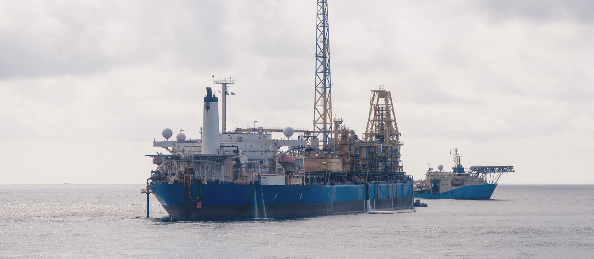

(צילום: אלבטרוס, באדיבות נובל אנרג'י) ספינת האסדה
האסדה אמורה להיות ממוקדמת במרחק תשעה קילומטרים מהחוף, אלא שבעמותת שומרי הבית והפעילים הנוספים, דורשים שהיא תהיה מרוחקת 120 קילומטר מהחוף. בחודשים האחרונים מנהלים הפעילים קמפיין מתוקשר להפנמת הפער הגדול הזה בין דרישתם למה שצפוי להיות בפועל, בין היתר על ידי מיצג חביות בכיכר רבין שבתל אביב, שהוצב במוצאי השבת האחרונה.
. המטרה היא לעורר מודעות ציבורית לאסון שעתיד להתרחש על מישור החוף, במקרה שתוקם אסדה לפי ותכניות הממשלה, במרחק של פחות מעשרה קילומטרים מהחוף. מדובר על פה הן על זיהום אויר בשיעורים פנומנליים ובפרט על סמך אסדת תמר שנמצאת מול חופי אשקלון, שהיא המזהם הגדול בישראל היום.
"מדובר גם בזיהום למים בשגרה, ובסכנה של שפך של חומרים מזוהמים דוגמת הקונדנסט - משמיד חופים לעד. הקונדנסט הוא מרכיב שמופרד גם הוא מתוך הגז הגולמי שמגיע בצינור אל האסדה. קונדנסט עלול - מעבר לזה שהוא מרעיל את הביולוגיה הימית ומחריב אותה - להשמיד את החוף.
"התהליך שנעשה על ידי המועצה הארצית לאורך שנים, בהנחיה של משרד האנרגיה, הוא תהליך שבעינינו הוא קלוקל. בעולם, 97% אחוז מהמקרים של מאגרים במים עמוקים מפותחים באמצעות אסדה צפה מעל המאגר, ולא באמצעות אסדה קרובה לחוף. אין הגיון לקחת את הגז הגולמי, לשנע אותו בצינור. זה עלול לגרום לסתימות בצינור, יש עדויות מהעולם".
"משרד האנרגיה במתווה הנוכחי ובראשו השר שטייניץ גורם לאסון אקולוגי מהסוג שהמזרח התיכון לא ידע מעודו, ועלול לגרום לחורבן החופים של ישראל לעד. מעבר לזה, בשוטף עלולה להיות תמותה גם בזיהום אויר וגם הרעלה של מי שתייה, ומשרד האנרגיה נכנס לזה בעיניים עצומות".
"אנשי מקצוע במשרד הודו בפנינו בשיחות סגורות שמשרד האנרגיה שגה, אבל להפוך את הקערה על פיה זה מסובך ויקר. השיקולים הכלכליים שלהם לא מעניינים אותנו, השיקולים שלנו הם של החיים של הילדים שלנו, ובריאות תושבי האזור. אלה השיקולים שצריכים להנחות את הממשלה, לא שיקולים לטובת חברות הגז או שיקולים אחרים. אם מסתכלים על עלויות התחלואה ומכניסים אותן במשוואה, אז אין ספק שסכום השקעה חד פעמי מצד המדינה, גדול ככל שיהיה, לא מתמודד עם המחיר של עלויות התחלואה לאורך שנים.
"הטענות המוצגות מטעות ואינן נכונות. המתקנים על האסדה נבנים כמערכת סגורה צפויים לעמוד במדדים של ערכי הסביבה. בכל מקרה לא יינתן אישור הפעלה למתקנים אם תהייה חריגה ממדדי הפליטות הטענות לגבי זיהום המים – אינן נכונות. כיום מפיקה אסדת תמר 4.5 מ"ק מים ליום, עם תחילת ההפקה צפויה אסדת לוויתן להפיק 10 מ"ק ליום, אשר יטופלו בהתאם ויעמדו בכל התנאים. עלות הפרויקט היא שילוב של גורמים רבים וביניהם: היבטים סביבתיים, הנדסיים, בטיחותיים וביטחוניים". "בהליכי התכנון של תמ"א 37 ח' קבעו מוסדות התכנון את המיקום המאפשר הקמת אסדות, לאחר שנבחנו לעומק ההיבטים הרלוונטיים. כל עיכוב בפיתוח מאגרי הגז הטבעי, שיתרונותיו ברורים וידועים, ימנע את סגירת התחנות הפועלות על פחם ויוביל להמשך זיהום האוויר באזור ופגיעה בכלל תושבי ישראל".
כתבה זו פורסמה במקור באתר ״ ynet ״